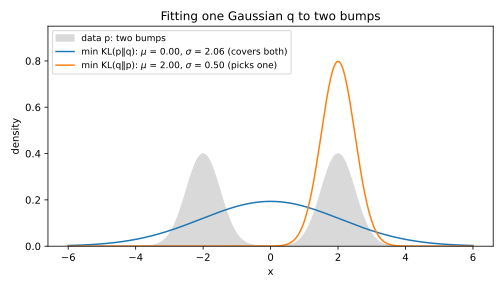
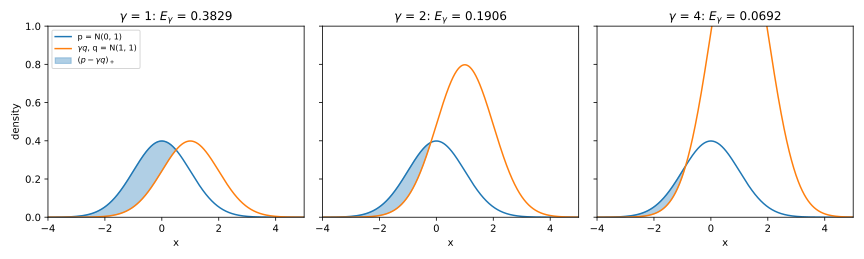
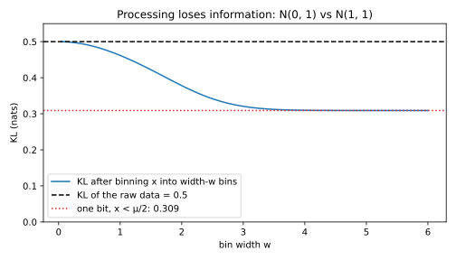

3 Divergences
3.1 Why this matters
Many questions in machine learning come down to comparing two distributions. You fit a model to data and want to know how far the fit is from the truth. A feature drifts in production, or an A/B test changes a conversion rate, and you want to know how many samples it takes to see the change. You perturb the data a little and want to know how much a downstream statistic can move. Later parts of this book ask the same questions about the outputs of an algorithm run on two different inputs.
A divergence answers such a question with one number, which is zero when the two distributions are equal and grows as they become easier to tell apart. There are several divergences because there are several questions. Take a die that is either fair or loaded so that a six comes up half the time. You can ask how much one roll tells you, on average, about which die you hold. You can also ask how strongly a single roll can point toward the die you do not hold, or how often the best possible guess from one roll is right. Each question has its own divergence. In general a divergence is not a distance, if only because it can change when you swap the two distributions.
One quantity organizes the whole chapter. Suppose you see an outcome and want to know which of two distributions, call them \(P\) and \(Q\), produced it. Write \(p(x)\) and \(q(x)\) for the probabilities that \(P\) and \(Q\) give to an outcome \(x\). The natural comparison is their quotient, the likelihood ratio \[r(x) = \frac{p(x)}{q(x)}, \tag{3.1}\] which says how many times more likely the outcome is under \(P\) than under \(Q\).
The logarithm of the ratio, written \(L(x) = \ln r(x)\), is the evidence that the outcome gives for \(P\). It is positive when the outcome favours \(P\), negative when it favours \(Q\), and zero when the outcome says nothing. The logarithm is there because evidence from independent observations should add up, and a logarithm turns a product of ratios into a sum. With natural logarithms, evidence is measured in units called nats.
On the die, let \(P\) be the loaded die and \(Q\) the fair one. The loaded die gives a six probability 0.5 and each other face probability 0.1, while the fair die gives every face probability \(\frac16\). A six is therefore three times as likely under the loaded die, which gives evidence \(\ln 3 = 1.10\) nats for “loaded”. Any other roll is 0.6 times as likely under the loaded die, so it gives \(\ln 0.6 = -0.51\) nats, weak evidence for “fair”.
Every divergence in this chapter is a summary of the likelihood ratio, and each summary answers one of the questions above. Because they are all built from the same ratio, they obey one shared rule, the data processing inequality, which says that processing the data can never make a divergence grow.
3.2 KL divergence
Roll the die many times and add up the evidence from each roll. If the die is loaded, sixes come up often and the sum climbs. If the die is fair, the many small negative terms win and the sum falls. Figure 3.1 shows eight runs of each, and each group drifts along a straight line despite the noise. The slope of the rising line is the average evidence per roll of the loaded die, and it is called the Kullback–Leibler (KL) divergence of \(P\) from \(Q\). It measures how fast data from \(P\) convince you that they are not from \(Q\). The falling line’s slope is the same divergence with the two dice swapped, which comes up below.

Written out, the KL divergence is the average of the evidence over outcomes drawn from \(P\): \[D_{\mathrm{KL}}(P\|Q) = \mathbb E_P\left[\ln\frac{p(X)}{q(X)}\right] = \sum_x p(x)\ln\frac{p(x)}{q(x)}. \tag{3.2}\] Here \(\mathbb E_P\) is the average over an outcome \(X\) drawn from \(P\). For continuous distributions, \(p\) and \(q\) are densities and the sum becomes an integral. On the die, the six and the other five faces each have total probability 0.5 under \(P\), so the KL divergence is \(0.5\ln 0.6 + 0.5\ln 3 = 0.2939\) nats per roll.
The KL divergence is never negative, and it is zero only when \(P\) and \(Q\) are equal. This is Gibbs’ inequality, and it says that data from \(P\) never favour \(Q\) on average. The plain reason is that the logarithm bends downward, so the average of the logarithms of some numbers is at most the logarithm of their average. Apply this to the reversed ratio \(q/p\) under \(P\). Its average adds up the probabilities that \(Q\) gives to the outcomes \(P\) can produce, so it is at most 1. The average of \(\ln(q/p)\) is therefore at most \(\ln 1 = 0\), and the KL divergence, its negative, is at least 0.
The KL divergence is not symmetric, because it averages under its first argument. On the die, the divergence in the reverse direction, written \(D_{\mathrm{KL}}(Q\|P)\), is only 0.2426. The difference lies in what each die produces. Rolls of the loaded die produce sixes, which are strong evidence for “loaded”, while rolls of the fair die produce mostly other faces, which are only weak evidence for “fair”. So a loaded die gives itself away faster than a fair one proves its innocence.
The most useful property of the KL divergence is that it adds up over independent observations. The probability of a pair of independent observations is the product of their probabilities, so the likelihood ratio of the pair is a product, and its logarithm is a sum. The averages then add too: \[D_{\mathrm{KL}}(P_1\times P_2\,\|\,Q_1\times Q_2) = D_{\mathrm{KL}}(P_1\|Q_1) + D_{\mathrm{KL}}(P_2\|Q_2). \tag{3.3}\] Here \(P_1\times P_2\) is the distribution of a pair drawn independently from \(P_1\) and \(P_2\). So \(n\) independent samples from the same distribution carry \(n\) times the KL divergence of one, which is the straight line in Figure 3.1. Independence is a condition here, not a detail. When two observations are correlated, the second can partly repeat what the first already said, and its evidence no longer adds in full.
Additivity tells you how many observations you need. After \(n\) rolls of the loaded die, the total evidence has mean \(0.2939\,n\). Its standard deviation is \(0.8047\sqrt n\), because the evidence of one roll has standard deviation 0.8047 and the variances of independent rolls add. The mean drift grows like \(n\) and the noise only like \(\sqrt n\), so the drift wins in the end. It reaches one standard deviation of noise when \(0.2939\,n = 0.8047\sqrt n\), which happens after \((0.8047/0.2939)^2 = 7.50\) rolls. For other pairs, with a similar spread of evidence per observation, the same argument suggests that the number of observations you need grows like one over the KL divergence. The section on Pinsker’s inequality makes this precise.
The same number measures how well a model fits. Suppose the data come from \(p\) and you model them with \(q_\theta\), a density with parameter \(\theta\). Then \(\ln(p(x)/q_\theta(x))\) is the evidence that an outcome gives for the truth over the model. The KL divergence splits into two parts, and only the second depends on the model: \[D_{\mathrm{KL}}(P\|Q_\theta) = \mathbb E_P[\ln p(X)] - \mathbb E_P[\ln q_\theta(X)]. \tag{3.4}\] So minimizing the KL divergence over \(\theta\) is the same as maximizing the expected log-likelihood \(\mathbb E_P[\ln q_\theta(X)]\). You cannot compute that expectation, because you do not know \(p\), but its sample version, the average of \(\ln q_\theta\) over the data, is exactly what maximum likelihood maximizes. The KL divergence is infinite if the model gives zero probability to an outcome the data can produce, which is why practical models keep every probability positive.
Which direction you minimize matters, because each direction averages over different outcomes. The forward direction, \(D_{\mathrm{KL}}(P\|Q_\theta)\), averages over the data, and where the data go but the model puts almost no probability, the evidence \(\ln(p/q_\theta)\) explodes. So the forward fit must cover every region the data visit, and it is called mass-covering. The reverse direction, \(D_{\mathrm{KL}}(Q_\theta\|P)\), averages over the model instead. Regions the model ignores then cost nothing, but model probability where the data never go is punished heavily. So the reverse fit prefers to sit inside one region of the data and ignore the rest, and it is called mode-seeking. Variational inference, which approximates a hard distribution by a simpler model, minimizes the reverse direction. That direction needs only samples and densities from the model, and the target density only up to a constant.
Figure 3.2 fits a single normal distribution to data from two separated bumps. The forward fit copies the mean and the variance of the data, so it is a wide bump centred in the empty valley between them. The reverse fit sits on one bump and ignores the other, which gives it a forward KL divergence of 15.307 against 0.724 for the forward fit.

3.3 Rényi divergence
The KL divergence is the average of \(\ln r\) under \(P\). Exponentiating an average of logarithms gives a geometric mean, so \(e^{D_{\mathrm{KL}}}\) is the geometric mean of the likelihood ratio. Nothing forces you to use the geometric mean, though. Other means of the same numbers give large values more weight, or less.
The usual means all belong to one family, the power means. To take the power mean with exponent \(s\), raise each value to the power \(s\), average, and undo the power. The harmonic mean has exponent \(-1\) and the arithmetic mean has exponent 1, while the geometric mean is the limit as the exponent goes to 0. As the exponent grows without bound, the power mean picks out the largest value.
On the die, the likelihood ratio under \(P\) takes two values with equal probability, 0.6 and 3. Table 3.1 lists its means. Each mean gives a larger value than the one before, because each leans harder on the large ratio.
| Mean of \(r\) under \(P\) | Value | Its logarithm | Divergence |
|---|---|---|---|
| Harmonic, \(1/\mathbb E_P[1/r]\) | 1.0000 | 0 | \(D_0\) |
| Geometric, \(e^{\mathbb E_P[\ln r]}\) | 1.3416 | 0.2939 | \(D_1 = D_{\mathrm{KL}}\) |
| Arithmetic, \(\mathbb E_P[r]\) | 1.8000 | 0.5878 | \(D_2\) |
| Largest value, \(\max r\) | 3.0000 | 1.0986 | \(D_\infty\) |
The Rényi divergence of order \(\alpha\), a positive number you choose, is the logarithm of the power mean with exponent \(\alpha - 1\). Orders 1 and \(\infty\) are defined as limits, which the next paragraph explains. The definition is usually written as an average under \(Q\) rather than under \(P\). That gives the same value, because an outcome with likelihood ratio \(r\) counts that many times as much in an average under \(P\) as in one under \(Q\). So \[D_\alpha(P\|Q) = \frac{1}{\alpha - 1}\ln\mathbb E_Q\big[r^\alpha\big] = \frac{1}{\alpha - 1}\ln\sum_x p(x)^\alpha q(x)^{1-\alpha}. \tag{3.5}\] Think of the order as a dial. Near order 1 it gives the typical evidence, and as the order grows, the mean is pulled toward the largest ratio, so you get the worst case.
As the order goes to 1, the power mean tends to the geometric mean, so the Rényi divergence tends to the KL divergence. That is why the KL divergence is also written \(D_1\). A larger exponent leans harder on the large ratios, so power means grow with their exponent, and the Rényi divergence therefore never decreases as the order grows. As the order goes to infinity, the mean is dominated by the largest ratio. The limit is the max-divergence, the strongest evidence that any single outcome can give: \[D_\infty(P\|Q) = \ln\max_x r(x). \tag{3.6}\]
The max-divergence is also the largest ratio that \(P\) and \(Q\) can give to any event, not just to a single outcome: \[D_\infty(P\|Q) = \ln\max_{A:\,Q(A) > 0}\frac{P(A)}{Q(A)}. \tag{3.7}\] Here the maximum runs over every event \(A\) that has positive probability under \(Q\). The reason is that an event’s probability is a sum over its outcomes. So if no outcome is more than some factor as likely under \(P\) as under \(Q\), no sum of outcomes is either.
Like the KL divergence, every Rényi divergence adds up over independent observations. For a pair, \(r^\alpha\) is a product of one factor per observation. When the observations are independent, the average of that product is the product of the averages, and the logarithm turns it back into a sum. This is the same step the Chernoff bound uses in Concentration inequalities, and it needs independence for the same reason.
Table 3.2 lists the orders that have names of their own.
| Order | \(D_\alpha(P\Vert Q)\) | What it measures |
|---|---|---|
| \(\alpha \to 0\) | \(-\ln Q(p > 0)\) | Only whether \(Q\) puts mass where \(P\) never lands |
| \(\alpha = \frac12\) | \(-2\ln\sum_x\sqrt{p(x)q(x)}\) | Symmetric in \(P\) and \(Q\); the sum, called the Bhattacharyya coefficient, measures how much the two distributions overlap |
| \(\alpha = 1\) | \(\mathbb E_P[\ln r]\) | KL: the average evidence |
| \(\alpha = 2\) | \(\ln\mathbb E_Q[r^2] = \ln\big(1 + \chi^2(P\Vert Q)\big)\) | The average square of \(r\) under \(Q\); \(\chi^2 = \mathbb E_Q[(r - 1)^2]\) is the \(\chi^2\) divergence of Section 3.8 |
| \(\alpha \to \infty\) | \(\ln\max r\) | The worst case |
Table 3.3 gives the Rényi divergences of the die in both directions, computed by the full edition’s script.
| \(\alpha\) | 0.5 | 1 (KL) | 2 | 5 | 10 | \(\infty\) |
|---|---|---|---|---|---|---|
| \(D_\alpha(P\Vert Q)\), loaded ‖ fair | 0.1362 | 0.2939 | 0.5878 | 0.9257 | 1.0216 | 1.0986 |
| \(D_\alpha(Q\Vert P)\), fair ‖ loaded | 0.1362 | 0.2426 | 0.3677 | 0.4653 | 0.4906 | 0.5108 |
Every row increases, as it must, and at order 10 the divergence is already within 7% of the worst case. That is because the larger of the die’s two ratios has probability \(\frac12\) under \(P\), so the power mean reaches the maximum quickly.
The Rényi divergence also bounds how often the evidence is large. Suppose the data come from \(Q\), and you ask how often an observation gives at least some number \(c\) of nats of evidence for \(P\). The Chernoff method of Concentration inequalities answers this with Markov’s inequality. That inequality says that a quantity that cannot be negative exceeds a level with probability at most its average divided by the level. Apply it to \(r^\alpha\), which reaches \(e^{\alpha c}\) exactly when the evidence reaches \(c\). The order must be positive here, since only then does \(r^\alpha\) rise with the evidence. By the definition, the average of \(r^\alpha\) under \(Q\) is \(e^{(\alpha - 1)D_\alpha}\), and dividing it by \(e^{\alpha c}\) gives, for every order \(\alpha > 0\), \[Q[L \ge c] \le \exp\big(-\alpha c + (\alpha - 1)D_\alpha(P\|Q)\big). \tag{3.8}\]
At order 1 the bound is \(e^{-c}\), Markov’s inequality applied to \(r\) itself, and it holds for every pair of distributions. The KL divergence, the order-1 member, drops out of the bound entirely, because an average says nothing about how often a quantity is far from it. Larger orders use more about the pair and can do much better.
3.4 Two normal distributions with equal variance
The most common pair in practice is a distribution and a shifted copy of it. It describes the same noise around two different centres, a feature before and after a drift, or two classes with the same spread. For two normal distributions with equal variance, every divergence has a closed form.
Let \(P\) be a normal distribution centred at 0, and write \(\sigma\) for its standard deviation. Let \(Q\) be the same curve shifted to the right by a distance \(s\). What matters is how far apart the centres are compared with the width of the curves, so write \(\mu = s/\sigma\) for the shift measured in standard deviations. Probability distributions showed that the evidence for this pair is a straight line in \(x\): \[L(x) = \frac{s^2 - 2sx}{2\sigma^2}. \tag{3.9}\] The divergences follow from this line: \[D_{\mathrm{KL}}(P\|Q) = \frac{\mu^2}2, \qquad D_\alpha(P\|Q) = \frac{\alpha\mu^2}2, \qquad D_\infty(P\|Q) = \infty. \tag{3.10}\]
Each formula has a one-line reason. The KL divergence is the average of a straight line, which is the line’s value at the average point 0. The Rényi divergence grows linearly in the order because the evidence is itself normal under \(P\), and averages of exponentials of a normal quantity have a simple closed form. The max-divergence is infinite because a line with a non-zero slope is unbounded.
Three consequences matter in practice. First, only the signal-to-noise ratio \(\mu\) matters, so doubling the noise has the same effect as halving the shift. Second, the dependence on the shift is quadratic, so a small shift costs very little. A shift of 0.1 standard deviations gives a KL divergence of only 0.005, which is why a small drift needs many samples to see. Third, the divergences add over independent coordinates. Take a shift by a vector \(s\) in many dimensions, with length \(\|s\|\) and the same standard deviation \(\sigma\) in each. Its Rényi divergence is then \[D_\alpha(P\|Q) = \frac{\alpha\|s\|^2}{2\sigma^2}, \tag{3.11}\] so only the length of the shift matters, not its direction.
The average case is finite, while the worst case is infinite. Large likelihood ratios exist, but they are rare, and the tail bound Equation 3.8 says how rare. Take \(\mu = 1\). Then the KL divergence is 0.5 and \(D_2\) is 1, while at order 10 the Rényi divergence reaches 5.
Now ask how often a draw from \(Q\) gives at least 2 nats of evidence for \(P\). Such a draw is about 7.4 times more likely under \(P\), although it came from \(Q\). Write \(\Phi\) for the cumulative distribution function (CDF) of the standard normal distribution. Because the evidence is a straight line, the event is a simple tail of \(Q\). For a threshold of \(c\) nats, the full edition works out its probability as \[Q[L \ge c] = \Phi\Big(-\frac\mu2 - \frac c\mu\Big). \tag{3.12}\] Here that is \(\Phi(-2.5) = 0.0062\).
How close does the tail bound come? At order 1 it is Markov’s bound \(e^{-2} = 0.1353\), valid for any pair, but for the normal pair you can choose the order. Because \(D_\alpha\) grows linearly in the order, the exponent of the bound is a parabola in it, with its lowest point at order 2.5, where the bound is \(e^{-3.125} = 0.0439\). So the Rényi bound is 7 times the exact value, against 22 times for Markov’s. The remaining gap is the usual price of the Chernoff method. It comes from Markov’s inequality, which is exact only for a quantity that takes just two values, while the evidence here is spread out.
3.5 Two Laplace distributions with shifted location
The Laplace distribution is the other standard noise model. Its density falls off like \(e^{-|x - m|/b}\) on both sides of its centre \(m\), where the scale \(b\) sets its width. So it has a sharp peak, and its tails fall off exponentially, more slowly than the normal’s. Probability distributions showed that its evidence against a shifted copy is bounded, unlike the normal’s. This section shows what that difference does to the divergences.
Let \(P\) be the Laplace distribution centred at 0 with scale \(b\), and let \(Q\) be the same distribution shifted to the right by a distance \(s\). Write \(t = s/b\) for the shift measured in units of the scale. The max-divergence is then just the shift, and the KL divergence is slightly less: \[D_{\mathrm{KL}}(P\|Q) = t + e^{-t} - 1, \qquad D_\infty(P\|Q) = t. \tag{3.13}\] To see why the max-divergence is \(t\), take scale 1, where the evidence is the difference of the two exponents, \[L(x) = |x - t| - |x|. \tag{3.14}\] Two numbers that are \(t\) apart cannot have absolute values that differ by more than \(t\), so the evidence never exceeds \(t\) in either direction. It equals \(t\) exactly for every \(x \le 0\), a region with probability \(\frac12\) under \(P\), so the worst case is not rare at all. Every Rényi divergence of this pair also has a closed form, given with the cheat sheet in Equation 3.30.
Figure 3.3 shows where each order looks, which is at \(P\) reweighted toward large likelihood ratios, more strongly as the order grows. For the normal pair the reweighting slides into the tail forever, so the Rényi divergence grows without bound. For the Laplace pair it piles up on \(x \le 0\), where the evidence is already at its maximum, and stops.

To compare the two noise models fairly, give them the same variance. The Laplace distribution with scale \(b\) has variance \(2b^2\), and a normal pair with that variance and the same shift has \(\mu = t/\sqrt2\), so its Rényi divergence is \(\alpha t^2/4\).
For small shifts, the Laplace pair is further apart, with a KL divergence close to \(t^2/2\), twice the normal pair’s \(t^2/4\). The Laplace density’s sharp peak makes a small shift easier to detect, because the peak moves visibly. For large orders the comparison reverses. The normal pair’s Rényi divergence grows linearly in the order forever, while the Laplace pair’s rises and levels off at \(t\), because its likelihood ratio can never exceed \(e^t\). At \(t = 1\), the full edition’s script finds that the curves cross at order 2.98. Above that order, the normal pair is the more distinguishable one (Table 3.4, Figure 3.4). So a claim that one pair is “more different” than another must name the divergence.
| KL | \(D_{0.5}\) | \(D_2\) | \(D_{10}\) | \(D_\infty\) | |
|---|---|---|---|---|---|
| Laplace, \(t = 1\) | 0.3679 | 0.1891 | 0.6191 | 0.9287 | 1.0000 |
| Normal, same variance | 0.2500 | 0.1250 | 0.5000 | 2.5000 | \(\infty\) |

3.6 Total variation
The KL and Rényi divergences are convenient to compute, but they do not directly answer practical questions such as how often a test is right. The total variation (TV) does. To see what it measures, draw \(p\) and \(q\) on the same axes. Where the curves overlap, an observation cannot tell you which distribution produced it, but where they don’t, it can. The total variation is the part that does not overlap, the mass of \(P\) that sits above \(Q\).
The total variation has several equal forms, each saying the same thing from a different side: \[\mathrm{TV}(P, Q) = \max_A|P(A) - Q(A)| = \sum_x\big(p(x) - q(x)\big)_+ = \frac12\sum_x|p(x) - q(x)|. \tag{3.15}\] Here \((y)_+\) means \(\max(y, 0)\), the positive part of a number \(y\). The first form is the largest gap between the probabilities of one event, and the second is the mass where \(p\) sits above \(q\). The third is half the total absolute difference between the two probability tables. The overlap of the two curves, \(\sum_x\min(p(x), q(x))\), is one minus the total variation.
The forms agree because the largest gap \(P(A) - Q(A)\) comes from the event that collects every outcome where \(p > q\), and nothing else. The positive and negative differences \(p - q\) have equal total mass, since both distributions sum to 1, and that gives the half-sum form.
On the die, only the six has \(p > q\), and its excess is \(0.5 - \frac16 = \frac13\), so the total variation is \(\frac13\). Unlike the KL divergence, the total variation is symmetric, and it always lies between 0 and 1.
The total variation sets the limit for a single observation. Suppose \(P\) or \(Q\) is picked with probability \(\frac12\) each, and you see one draw. A test that says “\(P\)” on an event \(A\) is right in two cases. Either the draw came from \(P\) and landed in \(A\), or it came from \(Q\) and landed outside. Averaging the two cases gives a probability of \(\frac12 + \frac12(P(A) - Q(A))\) of being right. The best test therefore uses the best event, saying “\(P\)” exactly when the observation is more likely under \(P\), and its probability of being right is \[\Pr[\text{correct}] = \frac12 + \frac12\mathrm{TV}(P, Q). \tag{3.16}\]
Guessing blind is right half the time, and seeing the draw adds half the total variation. A randomized test does no better, because it only mixes events, and a mix cannot beat the best one. The equal chances of \(P\) and \(Q\) are a condition of this formula. With unequal chances the best test changes, and the hockey-stick divergence of the next section takes over.
On the die, the best test says “loaded” exactly when it sees a six, and it is right with probability \(\frac12 + \frac16 = \frac23\). No classifier, however clever, can beat \(\frac12 + \frac12\mathrm{TV}\) from a single draw with equal chances, because this test already reaches it.
The total variation also bounds how much any fixed procedure can change when the data distribution changes. Let \(g\) be any statistic whose values always lie in an interval of length \(\ell\). When \(Q\) is replaced by \(P\), its average moves by at most \(\ell\) times the total variation: \[\big|\mathbb E_P[g(X)] - \mathbb E_Q[g(X)]\big| \le \ell\,\mathrm{TV}(P, Q). \tag{3.17}\] For values between 0 and 1, the reason is that the change adds up \(g(x)\) times \(p(x) - q(x)\) over all outcomes. That sum is largest when \(g\) is 1 where \(p > q\) and 0 elsewhere, and then it equals the total variation.
For example, suppose the test distribution moves from \(Q\) to \(P\) with total variation at most 0.01. Then the accuracy of any fixed classifier moves by at most 0.01. That is because accuracy is the average of a statistic that is 1 for a correct prediction and 0 for a wrong one. The classifier must stay fixed, though. A classifier retrained on the new data is a different statistic, and the bound says nothing about it.
The total variation does not add over samples, since for \(n\) independent samples it is capped at 1 and has no simple formula. That is why you usually compute a KL or Rényi divergence for \(n\) samples, where additivity makes it easy, and convert to total variation at the end (Section 3.10).
For the normal pair, the best event collects the outcomes more likely under \(P\). The two bell curves cross at the midpoint \(s/2\), so the best event is everything below it. Measured in standard deviations, the midpoint lies \(\mu/2\) above the centre of the first curve and the same distance below the centre of the second. This gives \[\mathrm{TV} = \Phi\Big(\frac\mu2\Big) - \Phi\Big(-\frac\mu2\Big) = 2\Phi\Big(\frac\mu2\Big) - 1. \tag{3.18}\] At \(\mu = 1\) the total variation is 0.3829, so the best test is right with probability 0.6915 (Figure 3.5, left).

3.7 Hockey-stick divergence
The total variation measures the mass of \(p\) that sticks out above \(q\). Now scale \(q\) up by a factor \(\gamma\) of at least 1, and measure the mass of \(p\) that still sticks out above \(\gamma q\) (Figure 3.6). That mass counts only the outcomes where \(p\) is more than \(\gamma\) times \(q\). It is the hockey-stick divergence, written \(E_\gamma\), and it measures how much of the difference between the two distributions comes from likelihood ratios above \(\gamma\): \[E_\gamma(P\|Q) = \max_A\big[P(A) - \gamma Q(A)\big] = \sum_x\big(p(x) - \gamma q(x)\big)_+ = \mathbb E_Q\big[(r - \gamma)_+\big]. \tag{3.19}\] The name comes from the shape of \((r - \gamma)_+\) as a function of \(r\), flat and then a straight line. As for the total variation, the best event collects every outcome where \(p\) beats \(\gamma q\).

The condition \(\gamma \ge 1\) is what makes this a divergence. With \(\gamma\) below 1, the event that contains every outcome gives \(1 - \gamma\), so the quantity would be positive even for two equal distributions.
Three properties follow from the picture. With no scaling, the hockey-stick divergence is the total variation, so \(E_1 = \mathrm{TV}\). As \(\gamma\) grows, less of \(p\) sticks out, so \(E_\gamma\) never increases. It reaches zero exactly when \(\gamma q\) covers \(p\) everywhere. That happens once \(\gamma\) reaches the largest likelihood ratio, \(e^{D_\infty}\).
A fourth property is the reason the divergence matters for testing. Write \(\pi\) for the prior probability of \(P\), the chance that \(P\) produced the data before you look at them. Assume that this prior is at most one half, so that the prior odds against \(P\), written \(\gamma = (1 - \pi)/\pi\), are at least 1. The smallest possible chance of a wrong guess from one observation is then \[\pi\big(1 - E_\gamma(P\|Q)\big). \tag{3.20}\] The reason is that a test that says “\(P\)” on an event \(A\) errs with probability \(\pi(1 - [P(A) - \gamma Q(A)])\). The best event makes the bracket equal to \(E_\gamma\). So always guessing \(Q\) is wrong with probability \(\pi\), and the observation removes a fraction \(E_\gamma\) of that error. With equal priors, \(\gamma\) is 1, and this is the total-variation test of the previous section.
For the normal pair, the full edition computes the hockey-stick divergence in closed form: \[E_\gamma = \Phi\Big(\frac\mu2 - \frac{\ln\gamma}\mu\Big) - \gamma\,\Phi\Big(-\frac\mu2 - \frac{\ln\gamma}\mu\Big). \tag{3.21}\] It is positive for every \(\gamma\), because the max-divergence is infinite and no finite \(\gamma\) covers \(p\). At \(\mu = 1\) it gives \(E_2 = 0.1906\). The Laplace pair has a closed form too, which holds as long as \(\gamma\) is at most \(e^t\): \[E_\gamma = 1 - e^{-(t - \ln\gamma)/2}. \tag{3.22}\] Beyond that point it is zero, and at \(\gamma = 1\) it gives the Laplace total variation, \(1 - e^{-t/2}\).
The curve of \(E_\gamma\) against \(\gamma\) shows how much of the difference comes from large likelihood ratios (Figure 3.7). For the die, only the six has a ratio above \(\gamma\), for \(\gamma\) between 1 and 3, so \(E_\gamma = 0.5 - \gamma/6\) falls in a straight line to zero at \(\gamma = 3\). The Laplace curve reaches zero at \(\ln\gamma = t\), while the normal curve never does. So the curve separates a ratio that is never large, as for the Laplace pair, from one that is large only rarely, as for the normal pair.

Rejection sampling shows what the hockey-stick divergence costs in practice. It draws samples from a target \(p\) using draws from an easier proposal \(q\), by proposing an outcome from \(q\) and keeping it with probability \(\min(1, p/(\gamma q))\). This works exactly when the envelope \(\gamma q\) lies above \(p\) everywhere. If \(\gamma\) is too small, the part of \(p\) above the envelope is cut off, and the mass of that part is exactly \(E_\gamma\).
Take the loaded die as the target and the fair die as the proposal. With \(\gamma = 3\), the largest ratio, the envelope covers \(p\), so the samples have exactly the loaded die’s distribution. With \(\gamma = 2\), the envelope gives a six only \(\frac13\), less than the loaded die gives it, so the uncovered mass is \(E_2 = 0.5 - \frac13 = \frac16\). The kept rolls are in proportion to the smaller of \(p\) and the envelope, which is 0.1 for each other face and \(\frac13\) for the six. Dividing by their total, \(\frac56\), makes a six come up 40% of the time instead of 50%. The total variation between the output and the target is therefore \(0.5 - 0.4 = 0.1\), below \(E_2\). In general it is at most \(E_\gamma\), so the hockey-stick divergence bounds what a cheap envelope costs. The bound is loose because dividing by the total gives back part of the mass that was cut off.
3.8 f-divergences
The KL divergence, the total variation and the hockey-stick divergence were defined separately, but each is an average under \(Q\) of some function of the likelihood ratio. Naming the function gives one family, the f-divergences, with one proof of their properties for all members.
Pick a function \(f\) of a positive number \(t\) that meets two conditions. It must be convex, which means its graph bends upward like a bowl. And it must be zero at \(t = 1\), so that a ratio of 1, no evidence either way, counts as no difference. The f-divergence averages \(f\) of the likelihood ratio under \(Q\): \[D_f(P\|Q) = \mathbb E_Q\big[f(r(X))\big] = \sum_xq(x)\,f\Big(\frac{p(x)}{q(x)}\Big). \tag{3.23}\] Table 3.5 lists the common choices of \(f\), called generators, with their values on the die.
| Divergence | \(f(t)\) | Die, loaded ‖ fair |
|---|---|---|
| KL, \(D_{\mathrm{KL}}(P\Vert Q)\) | \(t\ln t\) | 0.2939 |
| Reverse KL, \(D_{\mathrm{KL}}(Q\Vert P)\) | \(-\ln t\) | 0.2426 |
| Total variation | \(\frac12\lvert t - 1\rvert\) | 0.3333 |
| Hockey-stick \(E_\gamma\) (\(\gamma = 2\)) | \((t - \gamma)_+\) | 0.1667 |
| \(\chi^2\) | \((t - 1)^2\) | 0.8000 |
| Squared Hellinger \(H^2\) | \((\sqrt t - 1)^2\) | 0.1317 |
Every f-divergence is at least 0, and the two conditions on \(f\) are what guarantee it. Under \(Q\), the likelihood ratio averages to exactly 1, provided \(Q\) gives positive probability to every outcome \(P\) can produce. Otherwise the average falls short of 1 by the mass of \(P\) that \(Q\) misses. For a convex function, the average of the function is at least the function of the average, so the f-divergence is at least \(f(1)\), which is 0. A generator that is not convex could give a negative value, and one that is not zero at 1 would not vanish for equal distributions.
The Rényi divergence is not an f-divergence. But it is an increasing function of the one with generator \(t^\alpha - 1\), or \(1 - t^\alpha\) for orders below one, so it inherits their properties.
Figure 3.8 shows how each generator weighs the likelihood ratio. The \(\chi^2\) divergence grows quadratically in the ratio, so outcomes with large ratios dominate it, and on the die it is 0.80, the largest entry in Table 3.5. The total variation and the hockey-stick divergence grow linearly instead and ignore every ratio below a threshold. The reverse KL divergence blows up as the ratio goes to 0, so it punishes outcomes that \(P\) almost never produces.

The hockey-stick curves determine every f-divergence. The reason is that any convex generator can be built from hockey-stick shapes, one bend at each threshold, weighted by how sharply the generator bends there. So if you know the hockey-stick curves in both directions for every \(\gamma\) of at least 1, you know every f-divergence and every Rényi divergence. Later parts use this to move between different ways of saying that two distributions are close.
The f-divergences can also be estimated from samples alone, without knowing either density. A variant of the generative adversarial network (GAN) uses this to train generative models, and it is called the f-GAN (Nowozin, Cseke & Tomioka, 2016).
3.9 The data processing inequality
You rarely look at raw data. Instead you bin it, compute features, threshold a score, or pass it through a randomized algorithm. The data processing inequality (DPI) says that none of this can make two distributions easier to tell apart.
The reason is that processing averages likelihood ratios. When processing maps several inputs to the same output, the output’s likelihood ratio is an average of the inputs’ ratios, weighted by how likely each input is under \(Q\). Averaging pulls strong evidence toward weak evidence. For example, suppose you report only whether a die roll is even. A six, with ratio 3, is then reported together with a two and a four, with ratio 0.6 each. The fair die weighs the three rolls equally, so the even result gets the moderate ratio \((3 + 0.6 + 0.6)/3 = 1.4\). Every divergence is a convex summary of the ratios, and averaging first can only make a convex summary smaller, so no divergence can grow.
Processing may be random, so describe it by its output probabilities. A channel, written \(K\), maps each input \(x\) to a distribution over outputs \(y\), and a deterministic function is the special case that puts all its probability on one output. Feeding draws from each distribution through the channel gives two output distributions, written \(PK\) and \(QK\). The inequality says that these outputs are never further apart than the inputs, so for every f-divergence and every channel, \[D_f(PK\|QK) \le D_f(P\|Q). \tag{3.24}\] The same holds for every Rényi divergence, because each is an increasing function of an f-divergence. So it holds for the max-divergence too, which is their limit.
The channel may use its own randomness, but it must be the same whether the input came from \(P\) or from \(Q\), and this condition is essential. A channel that behaved differently in the two cases would carry information about which one it saw, and the output could then be easier to tell apart than the input.
Nothing is lost when the processing keeps the likelihood ratio, that is, when \(r(x)\) can be computed from the output. Such an output is called a sufficient statistic, and for it the inequality holds with equality. Table 3.6 shows the die reduced to its parity.
| Output | Rolls | \(P\) | \(Q\) | Ratio of the output | Average of \(r\) over the rolls |
|---|---|---|---|---|---|
| even | 2, 4, 6 | 0.7 | 0.5 | 1.4 | \((0.6 + 0.6 + 3)/3 = 1.4\) |
| odd | 1, 3, 5 | 0.3 | 0.5 | 0.6 | \((0.6 + 0.6 + 0.6)/3 = 0.6\) |
On the even rolls, the twos and fours dilute the strong evidence of a six. So the KL divergence drops from 0.2939 for the full roll to 0.0823 for its parity. If you instead report only whether the roll is a six, nothing is lost, because the likelihood ratio depends only on that bit. The bit is sufficient, and the KL divergence stays at 0.2939.
The coarsest processing reports only whether some event \(A\) happened, which turns each distribution into a coin, whose probability of heads is the probability it gives to the event. Write \(a\) and \(b\) for the heads probabilities of two coins. The KL divergence between the coins is called the binary KL divergence: \[\mathrm{kl}(a, b) = a\ln\frac ab + (1 - a)\ln\frac{1-a}{1-b}. \tag{3.25}\] By the inequality, for every event \(A\), \[D_{\mathrm{KL}}(P\|Q) \ge \mathrm{kl}\big(P(A), Q(A)\big). \tag{3.26}\] So if the KL divergence is small, no event can have very different probabilities under \(P\) and \(Q\). Hypothesis testing uses this form to bound the errors of any test.
In practice, there is no free lunch from processing, because a feature extractor, a summary statistic or a quantizer can only lose information about which distribution produced the data. The DPI bounds the best test, though, not a particular classifier. A processing step can help a bad classifier, but it cannot beat the best test on the raw data.
Binning a normal observation shows how much each divergence loses. Let \(P\) and \(Q\) be standard normal curves centred at 0 and at 1, with KL divergence 0.5. Suppose a sensor rounds each observation into bins of some width \(w\), with a bin edge at the midpoint \(\frac12\). Within each bin, the straight line of the evidence is replaced by a single level, so wider bins average away more evidence (Figure 3.9). Table 3.7 gives the KL divergence after binning.

| Bin width \(w\) | 0.5 | 1 | 2 | one bit: \(x < \frac12\)? | raw |
|---|---|---|---|---|---|
| KL after binning | 0.4898 | 0.4618 | 0.3781 | 0.3090 | 0.5 |
Coarser bins lose more, but slowly, and a single bit, whether the observation is below the midpoint, keeps 62% of the KL divergence (Figure 3.10). That bit is the best single test from the total variation section, and since the total variation is attained by that very event, the bit keeps all of it. So the same processing can keep one divergence whole while losing 38% of another.

3.10 Pinsker’s inequality
The KL divergence is easy to compute and adds up over samples. The total variation is what you usually want to report, because it gives the accuracy of the best test and the largest change in any bounded statistic. Pinsker’s inequality turns the first into a bound on the second. It says that the total variation is at most the square root of half the KL divergence: \[\mathrm{TV}(P, Q) \le \sqrt{\tfrac12D_{\mathrm{KL}}(P\|Q)}. \tag{3.27}\]
The square root comes from how the two divergences grow for nearby distributions. Write the likelihood ratio as one plus a small relative difference. The total variation is half the average size of that difference, so it grows linearly in it. The KL divergence is approximately half the average of its square, as a second-order expansion of the logarithm shows, so it grows quadratically. The average size of a quantity is at most the square root of its average square, and putting these facts together gives Pinsker’s inequality for nearby distributions, constant included. The full edition proves it for all distributions by reducing any pair to a pair of coins.
The bound passes 1 once the KL divergence exceeds 2, although the total variation is never above 1. So for large KL divergences, use the Bretagnolle–Huber inequality instead, which stays below 1 for every KL divergence: \[\mathrm{TV}(P, Q) \le \sqrt{1 - e^{-D_{\mathrm{KL}}(P\|Q)}}. \tag{3.28}\] Solving for where the two bounds cross shows that Bretagnolle–Huber is the better bound once the KL divergence is above 1.59 (Figure 3.11).

The constant in Pinsker’s inequality cannot be improved, because the bound is tight for two coins with heads probabilities just above and just below one half. Normal pairs are not that extreme, and for them the bound is \(\mu/2\), while the exact total variation is close to \(0.40\mu\) for small shifts.
The main use is to find how many samples you need. If one sample has KL divergence \(\mathrm{KL}_1\), then \(n\) independent samples have \(n\,\mathrm{KL}_1\), so Pinsker’s inequality bounds their total variation by \(\sqrt{n\,\mathrm{KL}_1/2}\). By Equation 3.16, the best accuracy is then at most \[\Pr[\text{correct}] \le \frac12 + \frac12\sqrt{\frac{n\,\mathrm{KL}_1}{2}}. \tag{3.29}\] That bound can get close to 1 only once the product \(n\,\mathrm{KL}_1\) is of order 1. So any test needs on the order of \(1/\mathrm{KL}_1\) samples to get close to perfect accuracy.
Take the normal pair with a shift of 0.1 standard deviations. One sample has KL divergence 0.005 and total variation only 0.0399, so the shift is invisible in a single observation. Table 3.8 shows how a few hundred samples make it clear, and compares the bounds with the exact total variation.
| \(n\) | KL of \(n\) samples | Exact TV | Best accuracy | Pinsker | Bretagnolle–Huber |
|---|---|---|---|---|---|
| 100 | 0.50 | 0.3829 | 0.6915 | 0.5000 | 0.6273 |
| 400 | 2.00 | 0.6827 | 0.8413 | 1.0000 | 0.9299 |
At 100 samples, Pinsker’s bound overstates the total variation by 31%. At 400 samples it is useless, while Bretagnolle–Huber still gives a bound below 1. Figure 3.5 (right) shows the Pinsker bound on accuracy over the whole range of sample sizes.
There is no converse, since a small total variation says nothing about the KL divergence. Suppose \(Q\) is a copy of \(P\), except that it moves a probability of \(10^{-9}\) onto a new outcome. Then the total variation is only \(10^{-9}\). But \(D_{\mathrm{KL}}(Q\|P)\) is infinite, because \(Q\) produces an outcome to which \(P\) gives probability zero.
3.11 Code
The closed forms for the two shifted pairs need only the standard library:
from math import erfc, exp, log, sqrt
def normal_cdf(x: float) -> float:
return 0.5 * erfc(-x / sqrt(2))
def gauss_kl(mu: float) -> float:
"""KL between N(0, s^2) and N(mu * s, s^2): half the squared shift in standard deviations."""
return mu**2 / 2
def gauss_tv(mu: float) -> float:
return 2 * normal_cdf(mu / 2) - 1
def gauss_hockey(mu: float, gamma: float) -> float:
"""E_gamma between N(0, 1) and N(mu, 1)."""
c = log(gamma)
return normal_cdf(mu / 2 - c / mu) - gamma * normal_cdf(-mu / 2 - c / mu)
def laplace_kl(t: float) -> float:
"""KL between Lap(0, b) and Lap(t * b, b)."""
return t + exp(-t) - 1
def laplace_renyi(alpha: float, t: float) -> float:
"""Renyi divergence of order alpha (not 1/2 or 1) between Lap(0, b) and Lap(t * b, b)."""
inner = alpha / (2 * alpha - 1) * exp((alpha - 1) * t) + (alpha - 1) / (2 * alpha - 1) * exp(-alpha * t)
return log(inner) / (alpha - 1)
def laplace_tv(t: float) -> float:
return 1 - exp(-t / 2)
print(f"{gauss_kl(1.0):.4f} {gauss_tv(1.0):.4f} {gauss_hockey(1.0, 2.0):.4f}") # 0.5000 0.3829 0.1906
print(f"{laplace_kl(1.0):.4f} {laplace_renyi(2.0, 1.0):.4f} {laplace_tv(1.0):.4f}") # 0.3679 0.6191 0.3935
print(f"{laplace_renyi(10.0, 1.0):.4f}") # 0.9287The full edition’s script, divergences.py, computes every number in this chapter and checks each closed form against simulation.
3.12 Cheat sheet
| Divergence | Definition | Normal pair, shift \(\mu\) | Laplace pair, shift \(t\) | Use it for |
|---|---|---|---|---|
| KL | \(\mathbb E_P[\ln r]\) | \(\mu^2/2\) | \(t + e^{-t} - 1\) | Average evidence; model fit; sample sizes (\(\approx 1/\mathrm{KL}\)) |
| Rényi \(D_\alpha\) | \(\frac{1}{\alpha-1}\ln\mathbb E_Q[r^\alpha]\) | \(\alpha\mu^2/2\) | Equation 3.30 | From typical to worst-case evidence; tail of \(L\) |
| Max-divergence \(D_\infty\) | \(\ln\max r\) | \(\infty\) | \(t\) | Worst-case ratio over all events |
| TV | \(\frac12\sum\lvert p - q\rvert\) | \(2\Phi(\mu/2) - 1\) | \(1 - e^{-t/2}\) | Best single guess with equal priors: \(\frac12 + \frac12\mathrm{TV}\); bounded statistics |
| Hockey-stick \(E_\gamma\) | \(\sum(p - \gamma q)_+\) | Equation 3.21 | \(\big(1 - e^{-(t - \ln\gamma)/2}\big)_+\) | Mass of large ratios; unequal priors; $E_1 = $ TV |
| f-divergence \(D_f\) | \(\mathbb E_Q[f(r)]\), \(f\) convex, \(f(1) = 0\) | — | — | One family for KL, TV, \(E_\gamma\), \(\chi^2\), \(H^2\) |
The Rényi divergence of the Laplace pair, for orders other than \(\frac12\) and 1, is \[D_\alpha(P\|Q) = \frac{1}{\alpha - 1}\ln\left(\frac{\alpha}{2\alpha - 1}e^{(\alpha - 1)t} + \frac{\alpha - 1}{2\alpha - 1}e^{-\alpha t}\right). \tag{3.30}\] At order \(\frac12\) both coefficients divide by zero, and the bracket is replaced by its limit \((1 + \frac t2)e^{-t/2}\).
Rules of thumb
- KL is the rate at which evidence accumulates. Telling two distributions apart takes about \(1/\mathrm{KL}\) independent samples.
- Compute in KL or Rényi, where independent samples add, and convert to TV at the end with Pinsker or Bretagnolle–Huber.
- The Rényi order is a dial from typical evidence (order near 1) to the worst case (order going to infinity).
- A bounded likelihood ratio (Laplace) gives a finite max-divergence. An unbounded one (normal) gives \(D_\infty = \infty\), though every finite order stays finite.
- Processing averages likelihood ratios together, so it can never increase a divergence, as long as the processing is the same for both distributions.
- Maximum likelihood minimizes forward KL and covers all modes. Variational inference minimizes reverse KL and picks one.
3.13 Further reading
- van Erven & Harremoës, “Rényi Divergence and Kullback–Leibler Divergence” (IEEE Transactions on Information Theory, 2014): the Rényi family and its properties, including proofs for general measures.
- Cover & Thomas, Elements of Information Theory (2nd ed., 2006), ch. 2 and §11.6: KL, Jensen’s inequality and Pinsker’s inequality.
- Polyanskiy & Wu, Information Theory: From Coding to Learning (2025), ch. 7: f-divergences, their variational forms and data processing at reference depth.
- Bishop, Pattern Recognition and Machine Learning (2006), §10.1: forward against reverse KL in variational inference.
Derivations. Every result in this chapter is derived step by step in the full edition’s chapter, except the sample-based estimation of f-divergences, which it cites, and the bound on rejection sampling, which is an exercise there.